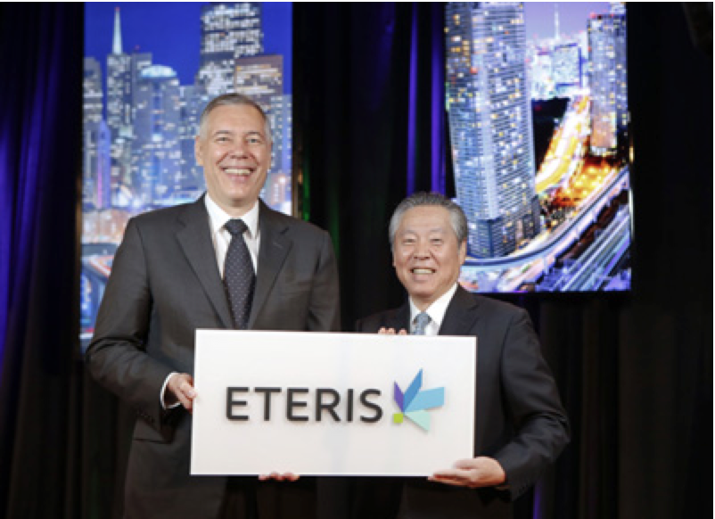

CSR Tech Monthly- Jul 2014


Technial Features
Warpage in microelectronic packaging: a closer look
Warpage is a significant issue in surface mount technology (SMT) assembly. It is present in all packaging scenarios from the least sophisticated molded lead frame packages to state of the art 3DIC stacked silicon packages. Control of warpage is necessary to achieve yield and reliability especially in today's advanced packages. The continued drive for miniaturization, especially with respect to component height, is exacerbating warpage as it has reduced the thickness of layers that were serving to maintain stiffness and flatness of the components...>>

News & Events
San Francisco, CA - July 8-10, 2014 - The latest manufacturing, materials and production developments for emerging and adjacent markets featured at SEMICON West 2014 (www.semiconwest.org), was held on July 8-10 at the Moscone Center in San Francisco, Calif. The co-location of emerging and adjacent market focused exhibitors and technical presentations within the framework of SEMICON West maximized the synergies between semiconductors and related markets, as each shares many of the same manufacturing materials, equipment, and processes. Over 200 exhibitors and 20 hours of technical presentations focused these emerging and adjacent markets, with leading manufacturers, experts and scientists that presented the latest, and answered the question

Eteris ™ to be focused on creating and enabling technology innovations that improve the way people live
San Francisco and Tokyo - July 7, 2014 - Applied Materials, Inc. (NASDAQ: AMAT) and Tokyo Electron Limited (TSE:8035) today unveiled the new name and logo of their combined company which will be used once the merger closes. Derived from the concept of eternal innovation for society, Eteris(TM) (pronounced: eh-TAIR-iss) embodies the spirit of what will drive the new company and speaks to what makes the combination unique.
"The new name for our combined company builds on the strong legacies of Applied Materials and Tokyo Electron, creating something even greater than the sum of the two," said Tetsuro Higashi, chairman, president and CEO of Tokyo Electron. "At the time we announced our plans to merge, we said this was a bold step forward for our industry. The name Eteris demonstrates our commitment to a new and exciting future for our company to create and enable technology innovations that improve the way people live."
Applied Materials CEO Gary Dickerson, left, and Tokyo Electron Chairman and CEO Tetsuro (Terry) Higashi, right, unveil "Eteris™". "Eteris is innovative and forward-looking and our logo symbolizes expanding future opportunities driving a new era of innovation and growth," said Gary Dickerson, president and CEO of Applied Materials. "With a new name, mission and vision, we are bringing our new company into focus so that we can move quickly, execute our combined strategy and begin to create value as soon as the merger closes."
Eteris captures the company's focus on innovations that will enable its customers and move the industry forward. Core to Eteris is the promise to leave a positive and lasting impact on the world. Paired with the name is a bold logo that celebrates Eteris' role in realizing the incredible possibility of technology. At the heart of the mark, the bright green square symbolizes the energy of the new company, the power of its technology and the foundation of innovation it provides to enable customer success. From the green foundation, bright colors and new dimensions expand, representing the many innovations Eteris will make possible every day. The logo represents expanding future opportunities that drive new innovation and growth.
The unveiling of the new company's name and logo are the latest milestones in the merger's progress. Last month the stockholders of Applied Materials and Tokyo Electron declared strong support for the combination. Approximately 99% of the shares voting at the Applied Materials stockholder meeting and 95% of the shares voting at the Tokyo Electron stockholder meeting voted to adopt the proposed business combination. These results underscore the value the combination brings to stockholders.
The closing of the business combination remains subject to customary conditions set forth in the parties' Business Combination Agreement, including review by regulators in various countries. Applied Materials and Tokyo Electron expect the transaction to close in the second half of 2014.
Yavne, Israel - July 7, 2014 - Orbotech Ltd. (NASDAQ: ORBK) today announced the signing of a definitive share purchase agreement to acquire SPTS Technologies Group Limited ("SPTS"), a U.K.-based leading manufacturer of etch, deposition and thermal processing equipment for the microelectronics industry, from European private equity firm Bridgepoint and others. The combined companies' comprehensive offering is expected to enable the leading designers of consumer electronics to turn their vision of next generation devices into reality.
SPTS offers an extensive range of manufacturing solutions which set industry standards in the high growth Advanced Packaging and MEMS (micro-electro-mechanical systems) markets. Through this acquisition, Orbotech expects to accelerate the execution of its growth and diversification strategy, and is moving up the electronics value chain. By building on SPTS' technological and commercial leadership position, Orbotech will be able to offer best -in-class solutions for a broad range of the most demanding micro manufacturing applications. Moreover, the combination will expand Orbotech's presence in Europe and North America and provide SPTS with a greater reach throughout the Pacific region, particularly in China.
"Orbotech identified Advanced Packaging as a strategic and natural extension of its business into an adjacent high growth market, where SPTS is a recognized technology leader. SPTS benefits from established, long-standing partnerships with major industry players. It is a well-known and highly respected brand with deep domain expertise in those segments in which it operates. Acquiring SPTS allows us to accelerate the expansion into Advanced Packaging, with multiple manufacturing solutions ideally suited for this growing segment", said Mr. Asher Levy, CEO of Orbotech Ltd. "Orbotech and SPTS are complementary in many ways. By combining the extensive know-how and core assets of both companies we will continue to enhance Orbotech's portfolio and industry leadership while focusing our efforts on driving profitable growth."
Mr. Levy concluded, "We look forward to welcoming the SPTS team to Orbotech and capitalizing on the best of both companies for continued success."
Mr. Kevin Crofton, President and Chief Operating Officer of SPTS, stated: "This is an exceptional opportunity to bring together two proven leaders both operating at the cutting-edge of consumer electronics manufacturing. We share a common vision for our respective markets, including an uncompromising commitment to our customers. Together, we will be a powerhouse of expertise in micro manufacturing, providing a broad solution set of mission-critical capabilities to serve designers and manufacturers across the dynamic electronics industry landscape. We are excited about the opportunity to leverage Orbotech's strong presence in the Pacific as well as its products and technologies."
Mr. Christopher Bell, partner at Bridgepoint, said: "Clear market leadership of high growth niches as well as the application of its technology to emerging niches in the microchip industry have made SPTS strategically attractive. With its new shareholder, the business will be well positioned to combine expertise in micro manufacturing to advance further. We wish the team continued success in the future."
Financial Information
Under the terms of the agreement, Orbotech will acquire SPTS for a total consideration (including repayment or assumption of debt) of approximately $370 million in cash. The acquisition and related costs are expected to be financed through a combination of cash on hand and approximately $300 million in debt financing under a new term loan facility. The acquisition and financing are expected to close during of the third quarter of 2014, each subject to certain closing conditions
In 2014, under U.K. GAAP and on a standalone basis for the full year, SPTS is expected to generate revenues of approximately $180 million, gross margin of approximately 48% of its revenues, and EBITDA margin of approximately 25% of its revenues. The acquisition of SPTS is expected to be accretive to Orbotech's non-GAAP earnings immediately after closing. After closing, SPTS' financial statements will be converted to U.S. GAAP to be consistent with Orbotech's financial statements.
Based on Orbotech's and SPTS's financial condition as of March 31, 2014, Orbotech estimates that post closing, it will have approximately $100 million of cash and cash equivalents on an adjusted basis.
In connection with the transaction, J.P. Morgan is serving as exclusive financial advisor to Orbotech and Jefferies and Ernst & Young are serving as financial advisors to SPTS.
Redmond, Wash. - June 26, 2014 - Crane Aerospace & Electronics, a segment of Crane Co. (NYSE:CR), has announced the appointment of Steve Barr as Vice President Operations for the Electronics Group of Crane Aerospace & Electronics. In his role, Barr is responsible for Operations and Supply Chain for all of Electronics Group locations, including Beverly, Massachusetts, Chandler, Arizona, Ft. Walton Beach, FL, Redmond, WA, West Caldwell, New Jersey and Kaohsiung, Taiwan. He will be located in Redmond, WA
Barr comes to Crane with a diverse background in many industries such as electrical distribution equipment, power generation and defense contracting. This included roles with companies such as Danaher, Cummins Engine Company and Hunter Defense Technologies. His career has progressed from Engineer to General Management.
Barr holds a Bachelor of Industrial Engineering from Cleveland State University and an Executive Master of Business from Case Western Reserve, Weatherhead School of Management. He is a certified Six Sigma Black Belt.
Crane Aerospace & Electronics is a major supplier of systems and components for critical aerospace and defense applications. These systems and components are designed for some of the toughest environments -- from engines to landing gear; satellites to medical implants; and missiles to unmanned aerial systems (UAS). Product and service offerings are organized in solution sets, and include Cabin Systems, Fluid Management, Landing Systems, Microelectronics, Microwave, Power, and Sensing & Utility Systems. Products are manufactured under the brand names ELDEC, Hydro-Aire, Interpoint, Keltec, Lear Romec, Merrimac, P.L. Porter and Signal Technology
Brussels, Belgium - July 8, 2014 - Expanding on its market-leading underfill portfolio, The Electronics Group of Henkel has developed a new non-conductive paste (NCP) material, LOCTITE ECCOBOND NCP 5209. Designed to enable the move toward fine-pitch flip-chip architectures, LOCTITE ECCOBOND NCP 5209 delivers comprehensive underfill protection that overcomes the challenges associated with conventional capillary underfill materials.
"The demand for higher-function, miniaturized devices is driving packaging specialists toward fine-pitch flip-chip designs," explains Matt Hayward, Semiconductor Liquids Global Product Manager for The Electronics Group of Henkel. "To enable this shift, new flip-chip bump technologies such as copper pillar are increasingly being employed because of their adaptability for ultra-fine pitches and better electrical connections. The reality is, only NCP can deliver the protection required within such tight dimensions."
an Francisco, CA - July 8, 2014 - Koh Young Technology and Koh Young America effectively entered the Semiconductor market with the unveiling of HORUS. This innovative new inspection system, featuring breakthrough technologies is Koh Young's exciting new high-powered 3D measurement system was exhibited at SEMICON West in held at Moscone Center in San Francisco.
Koh Young's groundbreaking HORUS, like the ancient Egyptian god it is named for, commands unexpected capabilities and special powers. For example, HORUS can measure the volume and dimension of virtually any type of substance, part, component, die, including very small features, very quickly and with astonishing accuracy. HORUS can also precisely measure transparent and shiny materials with high speed and accuracy, something that no other inspection systems currently available can do.y Systems. Products are manufactured under the brand names ELDEC, Hydro-Aire, Interpoint, Keltec, Lear Romec, Merrimac, P.L. Porter and Signal Technology